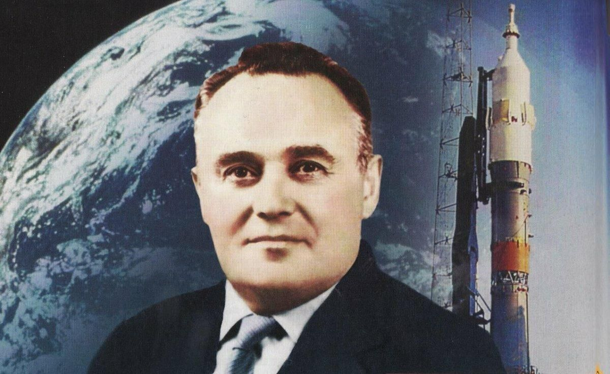
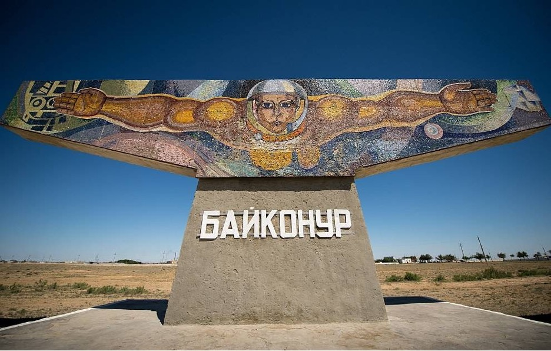
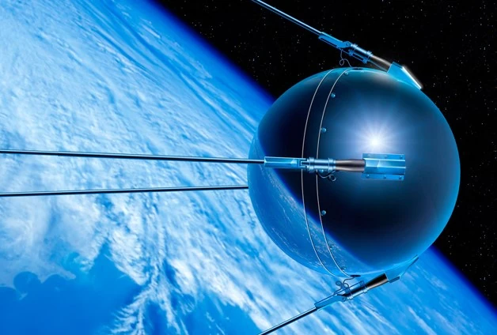
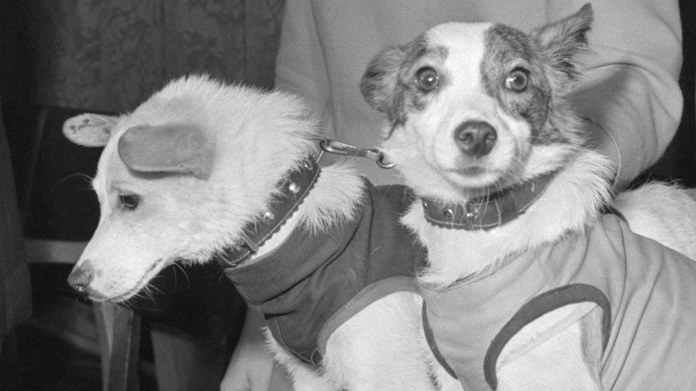
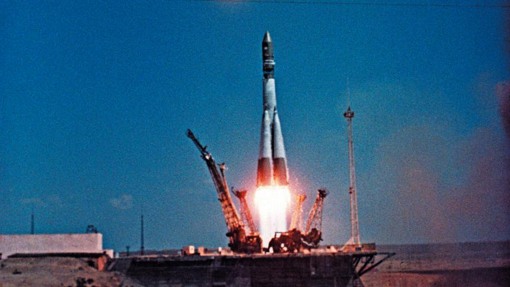
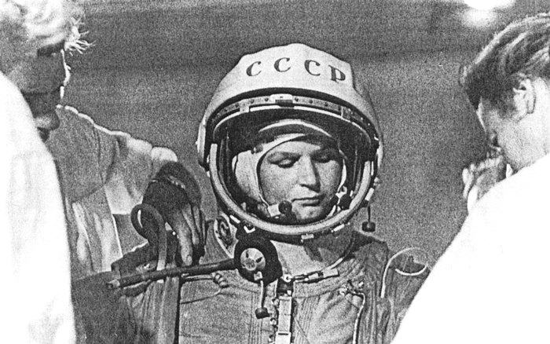
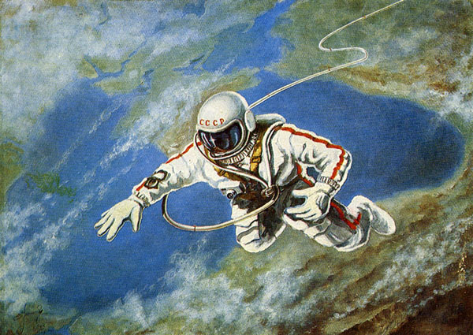
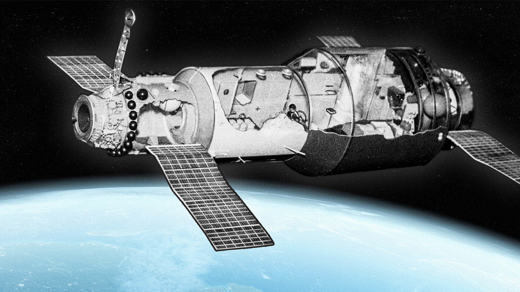

Создание ОКБ-1
Сергей Королев начинает работу над баллистическими ракетами дальнего действия.

Сергей Королев начинает работу над баллистическими ракетами дальнего действия.

Начало строительства космодрома Байконур в пустыне Казахстана.

4 октября выведен ПС-1. Официальное начало космической эры.

Первые живые существа, вернувшиеся на Землю после орбитального полета.

Юрий Гагарин на корабле «Восток-1» за 108 минут облетел Землю.

Валентина Терешкова становится первой в мире женщиной-космонавтом.

Алексей Леонов впервые шагнул в космический вакуум, проведя там 12 минут.

Запуск первой в мире пилотируемой орбитальной станции.